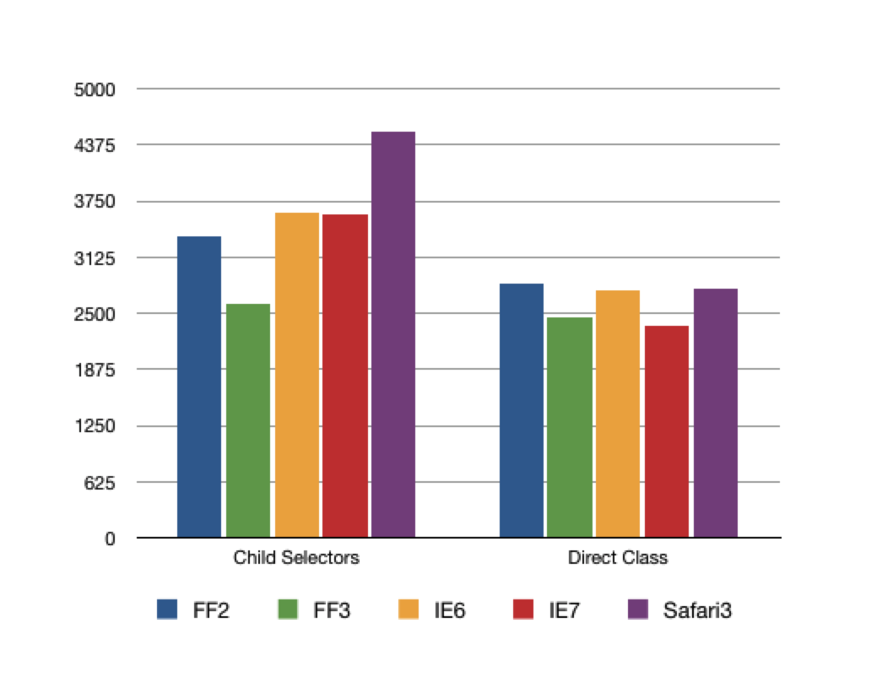
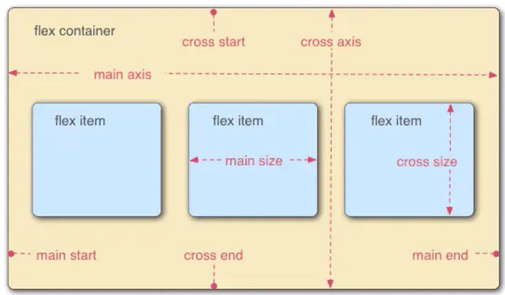
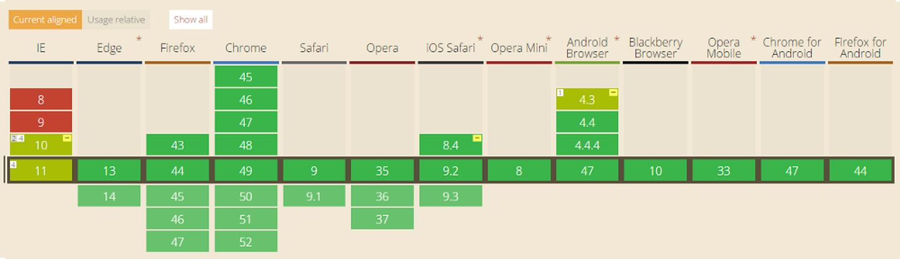
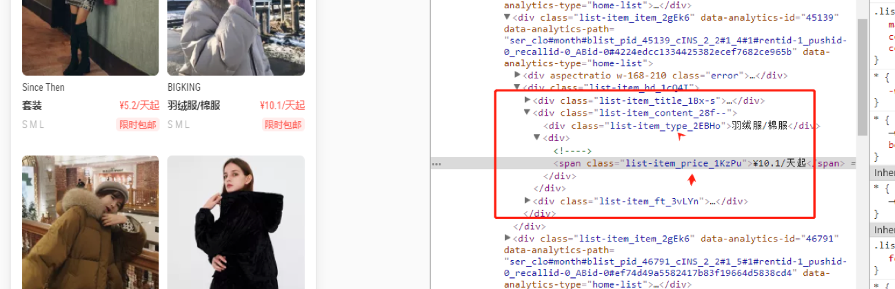

# 总结
# 简介
CSS（层叠样式表）用于设置和布置网页 - 例如，更改内容的字体，颜色，大小和间距，将其拆分为多个列，或添加动画和其他装饰功能。
# 盒模型
# 盒模型本质上是一个盒子，封装周围的 HTML 元素，它包括：外边距（margin）、边框（border）、内边距（padding）、实际内容（content）四个属性。
如下图：

# 盒模型：
标准盒子模型(
context-box)：宽度 = 内容的宽度（content）+ border + padding + margin;如下图:

IE 盒子模型(
border-box)：宽度 = 内容宽度（content + border + padding）+ margin;
如下图:

- box-sizing：用来控制元素的盒子模型的解析模式，默认为 content-box; 官网 demo
注意
我们在编写页面代码时应尽量使用标准的 W3C 模型(需在页面中声明 DOCTYPE 类型)，这样可以避免多个浏览器对同一页面的不兼容。 因为若不声明 DOCTYPE 类型，会由浏览器自己界定，在 IE 浏览器中 IE9 以下（IE6.IE7.IE8）的版本触发怪异模式，其他浏览器中会默认为 W3c 标准模式；若在页面中声明了 DOCTYPE 类型，所有的浏览器都会把盒模型解释为 W3C 盒模型。
# 总结：
- 盒模型由四部分组成： 内容(content)、填充(padding)、边界(margin)、 边框(border)；
- 盒模型两种： IE 盒子模型、W3C 盒子模型；
- 区 别： IE 盒模型的 width 和 height 属性的范围包含了 border、padding 和 content。
# 元素分类
HTML 可以将元素分类方式分为行内元素、块状元素和行内块状元素三种。首先需要说明的是，这三者是可以互相转换的，使用 display 属性能够将三者任意转换： 三种元素可以通过设置 display 互相转换
display: inline; /*内联*/
display: inline-block; /*内联块级*/
display: block; /* 块级 */
2
3
# 块级元素
块级元素的 display 属性为 block
块级元素的特点
- 块级元素独占一行, 每个块级元素都是从一个新行开始显示
- 可设置元素的宽度、高度、行高、外边距、内边距
- 元素宽度在不设置的情况下，是它本身父容器的 100%（和父元素的宽度一致），除非设定一个宽度
- 可以容纳内联元素和其他块元素
常见块级元素有：
<p>
<h1>~<h6>
<ol>
<ul>
<dl>
<table>
<form>
2
3
4
5
6
7
# 行内元素
行内元素的 display 属性为：inline
行内元素的特点
- 和其他行内元素并列显示在一行上；
- 元素的宽度、高度不可设置，可设置行高 line-height
- 元素的宽度就是它包含的文字或图片的宽度，不可改变。
- 行内元素只能容纳文本或者其他行内元素
- 行内元素可设置水平方向的外边距，但垂直方向不可以设置，内边距 padding 水平和垂直可以设置
常见行内元素元素：
<a>
<span>
<br>
<i>
<em>
<strong>
<label>
<q>
<cite>
<code>
2
3
4
5
6
7
8
9
10
# 行内块级元素
行内块级元素的 display 属性是 inline-block
行内块级元素是鉴于块级元素和行内元素之间的一种元素，它的特点是：
- 和其他元素都在一行上；
- 可设置元素的高度、宽度、外边距、内边距； 行内块级元素有：
<img>
<input>
2
# 权重
什么是权重？
在同一个元素使用不同的方式，声明了相同的一条或多条 css 规则，浏览器会通过权重来判断哪一种方式的声明，与这个元素最为相关，从而在该元素上应用这个声明方式声明的所有 css 规则
权重决定了你 css 规则怎样被浏览器解析直到生效。“css 权重关系到你的 css 规则是怎样显示的”。
当很多的规则被应用到某一个元素上时，权重是一个决定哪种规则生效，或者是优先级的过程。
每个选择器都有自己的权重。你的每条 css 规则，都包含一个权重级别。 这个级别是由不同的选择器加权计算的，通过权重，不同的样式最终会作用到你的网页中 。
如果两个选择器同时作用到一个元素上，权重高者生效。
权重的等级
1、!important，加在样式属性值后，权重值为 10000
# 注意：
- 一定要优先考虑使用样式规则的优先级来解决问题而不是 !important - 只有在需要覆盖全站或外部 CSS 的特定页面中使用 !important - 永远不要在你的插件中使用 !important - 永远不要在全站范围的 CSS 代码中使用 !important2、行内样式，如：style=””，权重值为 1000
3、ID 选择器，如：#content，权重值为 100
4、类，伪类和属性选择器，如： content、:hover 权重值为 10
5、标签选择器和伪元素选择器，如：div、p、:before 权重值为 1
6、通配符（*）、子选择器（>）、相邻选择器（+）、同胞选择器（~）、权重值为 0
权重的基本规则
- !important 优先级最高，但也会被权重高的 important 所覆盖
- 行内样式总会覆盖外部样式表的任何样式(除了!important)
- 单独使用一个选择器的时候，不能跨等级使 css 规则生效
- 如果两个权重不同的选择器作用在同一元素上，权重值高的 css 规则生效
- 如果两个相同权重的选择器作用在同一元素上：以后面出现的选择器为最后规则.
# !important>行内样式>ID 选择器 > 类选择器 | 属性选择器 | 伪类选择器 > 元素选择器 | 伪元素 > 继承 > 通配符
# 选择器
# CSS 选择器规定了 CSS 规则会被应用到哪些元素上。
分类：
基本选择器
- 通用选择器（*）
- 元素选择器（div,h1,p）
- 类选择器（.myclassname）
- ID 选择器（#myid）
- 属性选择器（a[rel="external"]）
组合器
- 后代组合器（li a）
- 直接子代组合器 （li > a）
- 一般兄弟组合器 (A ~ B)
- 紧邻兄弟组合器 (A + B)
- 列组合器 ( A || B)
伪选择器
- 伪类 (a:hover)
- 其核心就是用来选择那些不能够被普通选择器选择的文档之外的元素，比如:hover。
- 伪元素 (p::first-line)
- 其核心就是需要创建通常不存在于文档中的元素，比如::before。
- 伪类 (a:hover)
分组选择器
- 选择器列表（A, B）
# 选择器优化
# 浏览器是如何识别你的选择器的
浏览器读取你的选择器，遵循的原则是从选择器的右边到左边读取。换句话说，浏览器读取选择器的顺序是由右到左进行。选择器最右边的部分被称为”关键选择器“, 它将决定你的选择器的效率如何？是高是低。也就是说，对于一个给定的元素，需要匹配的规则越少，样式的解析的越快，性能就会有所提升
div.nav > ul li a[title]
上面的实例来说，浏览器首先会尝试在你的 HTML 标签中寻找“a[title]”元素，接着在匹配“li 和 ul”，最后在去匹配“div.nav”。这就是前成所主的“选择器从右到左的原则
那么什么样类型的选择器，性能高？什么样类型的选择器性能低呢？
# 选择器效率
关于 css 选择器有一个固有的效率，Steve Souders给排的顺序，如下所示:
- id 选择器（#myid）
- 类选择器（.myclassname）
- 标签选择器（div,h1,p）
- 相邻选择器（h1+p）
- 子选择器（ul > li）
- 后代选择器（li a）
- 通配符选择器（*）
- 属性选择器（a[rel="external"]）
- 伪类选择器（a:hover,li:nth-child）
上面九种选择器的效率是从高到低排下来的，基中 ID 选择器的效率是最高，而伪类选择器的效率则是最低，更详细介绍看Writing efficient CSS selectors
# 来自 Mozilla 的几点建议，David 在《Use efficient CSS selectors》 介绍了书写高效率的 css 选择器的方法
- 尽量避免多层嵌套
- 避免普遍规则
- 不要在 ID 选择器前加标签名或类名
- 不要在类名选择器前加标签名
- 尽可能使用具体的类别
- 避免使用后代选择器
- 标签分类规则中不应该包含一个子选择器
- 子选择器的问题
- 借助相关继承关系
- 使用范围内的样式表
# 测试对比
类选择器：
.element {
background: red;
}
2
3
后代选择器:
.table tr td.element {
background: red;
}
2
3
对比结果： 
# 定位
# position
| 值 | 描述 |
|---|---|
| static | 默认值 |
| relative | 生成相对定位的元素，相对于其正常位置进行定位。 |
| absolute | 生成绝对定位的元素，相对于 static 定位以外的第一个父元素进行定位。 |
| fixed | 生成绝对定位的元素，相对于浏览器窗口进行定位。 |
| sticky | 粘性吸顶布局 |
# flex
布局的传统解决方案，基于盒状模型，依赖 display 属性 + position 属性 + float 属性。它对于那些特殊布局非常不方便，比如，垂直居中就不容易实现。
Flexible Box 即是弹性盒子，用来做弹性布局，可以配合 rem 处理尺寸适配的问题，小程序
- 容器默认存在两根轴：水平的主轴（main axis）和垂直的交叉轴（cross axis）。主轴的开始位置（与边框的交叉点）叫做 main start，结束位置叫做 main end；交叉轴的开始位置叫做 cross start，结束位置叫做 cross end。
- Flex 默认沿主轴排列，单个项目占据的主轴空间叫做 main size，占据的交叉轴空间叫做 cross size。
- Flex 属性分为两部分：一部分作用于容器称容器属性，另一部分作用于项目称为项目属性

浏览器支持 Flexbox 的情况： 换过几次标准

# 常用容器属性
- flex-direction：改变主轴方向
flex-direction: row(默认, 从左到右) | row-reverse(从右到左) | column(从上到下) |
column-reverse(从下到上);
2
- justify-content：控制子项在主轴的对齐方式
justify-content: flex-start(默认, 起点对齐) | flex-end(终点对齐) | center(居中) |
space-between(两端对齐) | space-around(平均分配);
2

- align-items：控制子项在侧轴的对齐方式
align-items: flex-start(起点对齐) | flex-end(终点对齐) | center(居中) | stretch(
默认值,
未设置高度就铺满侧轴
)
| baseline（第一行文字的基线对齐）;
2
3
4
5

- align-content 属性定义了多根轴线的对齐方式。（如果项目只有一根轴线，该属性不起作用）
align-content: flex-start(起点对齐) | flex-end(终点对齐) | center(居中) | space-between(
两端对齐
)
| space-around(平均分配) | stretch（默认值）：轴线占满整个交叉轴。;
2
3
4

# 常用子项属性
- order：属性定义项目的排列顺序
order: 0 (数值越小，排列越靠前，默认为0。);
- align-self：控制单个子项在侧轴的对齐方式
允许单个项目有与其他项目不一样的对齐方式，可覆盖 align-items 属性。默认值为 auto，表示继承父元素的 align-items 属性，如果没有父元素，则等同于 stretch
align-self：auto(默认) | flex-start(起点对齐) | flex-end(终点对齐) | center(居中) | stretch（未设置高度就铺满侧轴) | baseline（第一行文字的基线对齐）
2

flex: 默认值为 0 1 auto。后两个属性可选
# BFC
什么是 BFC
- 块格式化上下文（Block Formatting Context，BFC） 是 Web 页面的可视 CSS 渲染的一部分，是块盒子的布局过程发生的区域，也是浮动元素与其他元素交互的区域。
- 具有 BFC 特性的元素可以看作是隔离了的独立容器，容器里面的元素不会在布局上影响到外面的元素，并且 BFC 具有普通容器所没有的一些特性
# BFC 渲染规则
- Box 垂直方向的距离由 margin 决定，属于同一个 BFC 的两个相邻 Box 的 margin 会发生重叠。
- BFC 的区域不会与浮动元素的 box 重叠。
- BFC 是页面上的一个隔离的独立容器，容器里面的子元素不会影响到外面的元素。
- 计算 BFC 的高度时，浮动元素也会参与计算。
# 满足下列条件之一就可触发 BFC
- 根元素
- float 的值不为 none（默认）
- overflow 的值不为 visible（默认）
- display 的值为 inline-block、table-cell、table-caption
- position 的值为 absolute 或 fixed
# BFC 应用场景
- 外边距塌陷
- 创建新的 BFC 避免两个相邻 div 之间的 外边距合并 问题, 如果想要避免外边距的重叠，可以将其放 BFC 容器
- 因浮动导致的盒子塌陷（清除浮动）
- 阻止元素被浮动元素覆盖
- 由例子可知，第二个元素有部分被浮动元素所覆盖，但文本信息不会被浮动元素所覆盖
# 清除浮动
- 额外标签（在最后一个浮动标签后，新加一个标签，给其设置 clear：both；）（不推荐:添加无意义标签）
.clearfix {
clear: both;
}
2
3
- 父级添加 overflow 属性（父元素添加 overflow:hidden）（不推荐: 内容过多的时候容易造成不会自动换行导致内容被隐藏掉）
.clearfix {
overflow: hidden;
}
2
3
- 利用伪类（推荐）
.clearfix:after {
content: "";
visibility: hidden;
display: block;
height: 0;
overflow: hidden;
clear: both;
}
.clearfix {
zoom: 1; /* 兼容 ie*/
}
2
3
4
5
6
7
8
9
10
11
# 浏览器渲染原理和过程
Webkit 内核渲染引擎流程：

Gecko 内核渲染引擎流程：

由上图两图, 虽然两种内核使用术语略有不同，但是整体渲染流程是基本相同的，以 webkit 为例可以看到大体分为 5 步
- 解析 HTML，生成 DOM 树; 同时解析 CSS，构建出 CSSOM 规则树
- 将 DOM 树和 CSSOM 规则树 结合，生成渲染树(Render Tree)
- Layout(回流): 根据生成的渲染树，进行回流(Layout)，以计算每个节点的几何信息
- Painting(重绘): 根据渲染树以及回流得到的几何信息，得到节点的绝对像素
- Composite（渲染层合并): 最后调用 GPU 绘制，合成图层，显示在屏幕上。
# 构建 CSSOM 树时，会阻塞渲染，直至 CSSOM 树构建完成，构建 CSSOM 树是一个十分消耗性能的过程，应该尽量保证层级扁平，减少过度层叠，越是具体的 CSS 选择器，执行速度越慢（后代选择器）W3CPLUS
# 相关链接
# 重绘和回流(重排)
回流是布局或者几何属性需要改变就称为回流。
会发生回流的属性：
- 盒模型相关
- width, height, padding, margin, display, border, min-height
- 定位属性和浮动
- top, bottom, left, right, position, float, clear
- 改变节点内部文字结构
- text-aligin, overflow, font-weight, font-family, line-height, vertival-aligin, font-size
- 盒模型相关
重绘是当节点需要更改外观而不会影响布局的，比如改变 color 就叫称为重绘
会发生重绘的属性：
- color, border-style, border-radius, visibility, text-decoration, background, background-image, background-position, background-repeat, background-size, outline-color, outline-style, box-shadow
回流必定会发生重绘，重绘不一定会引发回流。回流所需的成本比重绘高的多，改变深层次的节点很可能导致父节点的一系列回流。
会导致回流的操作：
- 浏览器窗口大小发生改变
- 添加或删除可见的 DOM 元素
- 元素字体大小变化
- 元素尺寸或位置发生改变（包括外边距、内边框、边框大小、高度和宽度等）
- 元素内容变化（文字数量或图片大小，比如用户在 input 框中输入文字等等）
- 定位或者浮动
- 查询某些属性或调用某些方法
- 激活 CSS 伪类（例如：:hover）
# 重绘和回流其实和 Event loop 有关：
- 当 Event loop 执行完 Microtasks 后，会判断 document 是否需要更新。因为浏览器是 60Hz 的刷新率，每 16ms 才会更新一次。
- 然后判断是否有 resize 或者 scroll ，有的话会去触发事件，所以 resize 和 scroll 事件也是至少 16ms 才会触发一次，并且自带节流功能。
- 判断是否触发了 media query
- 更新动画并且发送事件
- 判断是否有全屏操作事件
- 执行 requestAnimationFrame 回调
- 执行 IntersectionObserver 回调，该方法用于判断元素是否可见，可以用于懒加载上，但是兼容性不好
- 更新界面
- 以上就是一帧中可能会做的事情。如果在一帧中有空闲时间，就会去执行 requestIdleCallback 回调。
# 减少回流和重绘
浏览器的优化机制
由于每次重排都会造成额外的计算消耗，因此大多数浏览器都会通过队列化修改并批量执行来优化重排过程。浏览器会将修改操作放入到队列里，直到过了一段时间或者操作达到了一个阈值，才清空队列。但是，当进行获取布局信息的操作的时候，会强制队列刷新，比如当你访问以下属性或者使用以下方法：
- offsetTop、offsetLeft、offsetWidth、offsetHeight
- scrollTop、scrollLeft、scrollWidth、scrollHeight
- clientTop、clientLeft、clientWidth、clientHeight
- getComputedStyle()
- getBoundingClientRect
- 具体可以访问这个网站 以上属性和方法都需要返回最新的布局信息，因此浏览器不得不清空队列，触发回流重绘来返回正确的值。因此，如果要使用它们，最好将值缓存起来。
CSS 优化
- 使用 translate 代替 top，top 会触发 layout 但 translate 不会
- 减少使用 table 布局，可能很小的一个小改动会造成整个 table 的重新布局， 而且 table 本身渲染就慢
- 动画方面：动画执行的过程中，位置是不断变化的，会引起回流和重绘。如果动画执行的频率过高，去不断地计算当前元素的位置以及宽高等属性，比较消耗 CPU 计算资源，容易造成卡顿和网页性能的损耗。因此要选择一个合适的动画速度。
- 使用 visibility 替换 display: none ，因为前者只会引起重绘，后者会引发回流（改变了布局）
- 使用 opacity 代替 visibility，独立图层情况下，visibility 会触发重绘但是 opacity 不会
- 对具有复杂动画的元素使用绝对定位，使它脱离文档流，否则会引起父元素及后续元素频繁回流。
- CSS3 硬件加速（GPU 加速），使用 css3 硬件加速，可以让 transform、opacity、filters 这些动画不会引起回流重绘 。但是对于动画的其它属性，比如 background-color 这些，还是会引起回流重绘的，不过它还是可以提升这些动画的性能。
- 避免设置多层内联样式，CSS 选择符从右往左匹配查找，避免节点层级过多。对于第一种设置样式的方式来说，浏览器只需要找到页面中所有的 span 标签然后设置颜色，但是对于第二种设置样式的方式来说，浏览器首先需要找到所有的 span 标签，然后找到 span 标签上的 a 标签，最后再去找到 div 标签，然后给符合这种条件的 span 标签设置颜色，这样的递归过程就很复杂。所以我们应该尽可能的避免写过于具体的 CSS 选择器，然后对于 HTML 来说也尽量少的添加无意义标签，保证层级扁平。
<div> <a> <span></span> </a> </div> <style> span { color: red; } div > a > span { color: red; } </style>1
2
3
4
5
6
7
8
9
10
11
JavaScript 优化
- 不要把 DOM 的属性值放在循环里，当成循环的变量。比如获取 offsetHeight 时，会触发回流。因为需要刷新缓冲区域，去获取真实的值
- 避免频繁读取会引发回流/重绘的属性，如果确实需要多次使用，就用一个变量缓存起来。
- 避免频繁操作样式，最好一次性重写 style 属性，或者将样式列表定义为 class 并一次性更改 class 属性。
- 通过 style 属性设置样式导致回流。避免设置多级内联样式，因为每个都会造成回流，样式应该合并在一个外部类，这样当该元素的 class 属性可被操控时仅会产生一个 reflow。
- 比如： v-if 、v-show, 频繁操作时候应该用 v-show, 减少回流 ？
- 避免频繁操作 DOM，创建一个 documentFragment，在它上面应用所有 DOM 操作，最后再把它添加到文档中。
# 相关链接
# 预处理器
以前 CSS 无法定义变量，无法进行运算，需要手写很多浏览器兼容前缀，写出来的代码可能会占很大篇幅
预处理器可以让我们使用变量，继承，嵌套规则，运算，函数，scope 等编程的方式书写 css。一句话总结：增强 css 语法。
我们使用 sass，less，stylus 等语法编写的类 css 代码，然后经过编译，最后转换为真正的 css 代码。
- Less
- Sass
- Scss
- stylus
# 后处理器
后处理器可以将我们的 css 进行压缩，美化，以及加上浏览器前缀，减少我们的开发工作量。一句话总结：增强 css 的兼容性。
我们使用 postcss，将 css 进行美化，压缩，加前缀等操作。对 css 加入一些扩展。
# 函数
# CSS-in-JS
# CSS Modules
- 将css模块化，通过webpack帮我们自动化，动态生产类名称
- 解决了BEM要解决的问题，降低了css权重，模块之间的相依性
- 快速查找定位，module更加合适，同时module对于style向下传递的控制权也非常灵活，查看元素就可知道属于哪个组件
 css-moddules
# postcss
# rem && vw/vh
rem原理： 借助Javascript来动态修改mete标签中viewport的initial-scale的值，然后根据dpr修改html中的font-size值，再用rem来处理
vw兼容方案可以参考：如何在Vue项目中用vw实现移动端适配
# 优化
- 避免过度约束
- 避免后代选择符
- 避免链式选择符
- 使用紧凑的语法
- 避免不必要的命名空间
- 避免不必要的重复
- 最好使用表示语义的名字。一个好的类名应该是描述他是什么而不是像什么
- 避免！important，可以选择其他选择器
- 尽可能的精简规则，你可以合并不同类里的重复规则
- CSS Sprites
- 将一个页面涉及到的所有图片都包含到一张大图中去，然后利用 CSS 的 background-image，background- repeat，background-position 的组合进行背景定位。利用 CSS Sprites 能很好地减少网页的 http 请求，从而大大的提高页面的性能；CSS Sprites 能减少图片的字节。